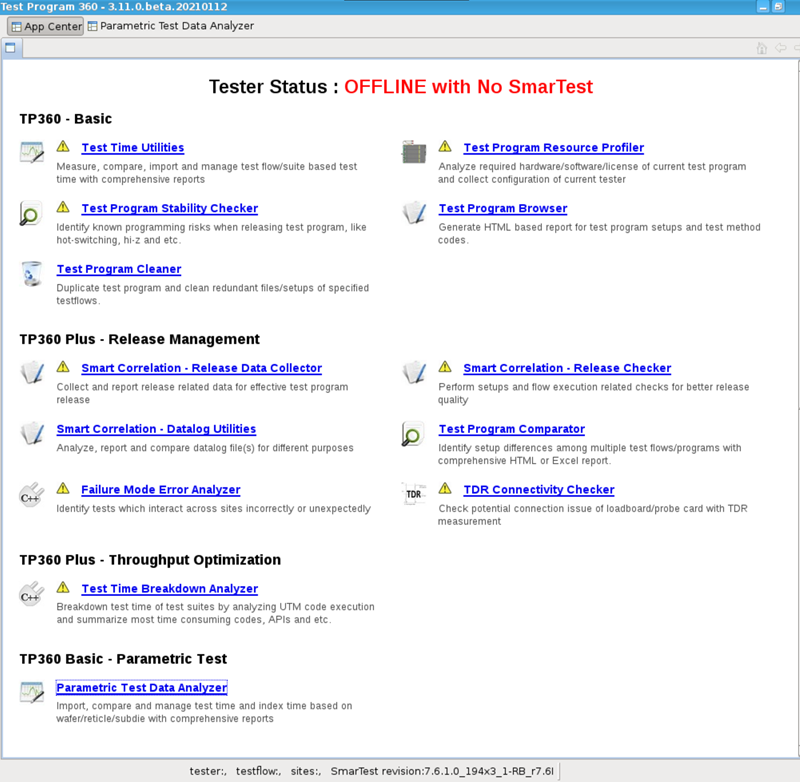
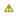
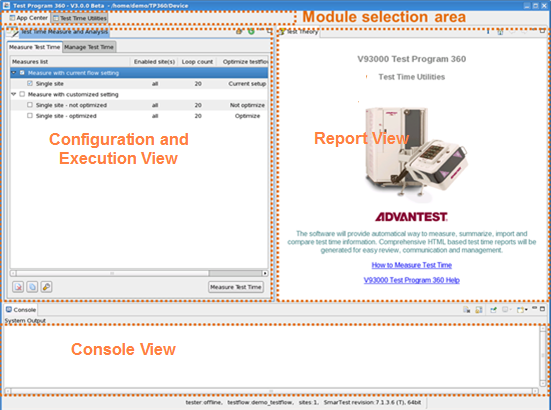

Opening TP360
After opening TP360, you can launch the provided function modules from the App Centertab.
Before you begin
- Set the environment variable HP83000_ANNOTATE_MCDLog to 1.
- Do not set up the environment variable HP83000_DISPLAY.
Procedure
Results
TP360 opens with the APP Center tab displayed on it. (See the following screenshot.)
Clicking a module name on the tab opens this module on TP360. To use those modules for your test program, see Using TP360.

Note Note that the

icon beside the title of a module in the App Center points out that SmarTest's current status (that is, online or offline) does not fit with the module's running environment.Note Do not close the App Center from the context
menu of the App Center tab.
Example
After clicking Test Time Utilities in the App Center tab, Test Time Utilities is open, which contains three views as illustrated in the following graphic:
- The Configuration and Execution view: Lets you perform configuration and execution.
- The Report view: Displays HTML results reports.
- The Console view: Shows the execution messages.

Functional changes
- Introduced in SmarTest 7.2.2